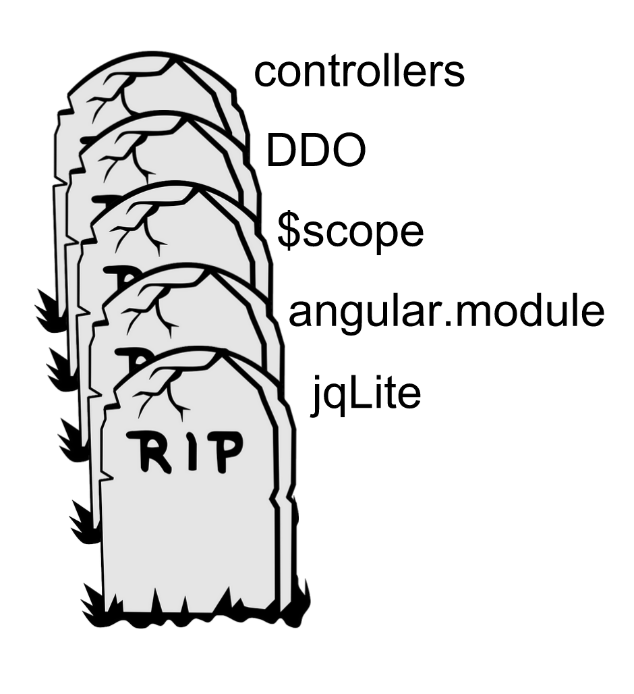

## My impressions of Angular 2,
(the developer preview)
### Disclaimer

### Disclaimer #2


# ?
- data binding
- add html behavior
- create html tags

### Much fun
Problems with Angular 1.x
It can be slow
Angular != Web Components
Complexity

Router = no bueno
## Angular 2?

Ng-Europe 2014
Angular 1.x ==X=> Angular 2

AtScript

ng-conf 2015
- Public deisgn docs
- Migration path
- TypeScript
What's great about Angular 2
But first, [demo app](http://0.0.0.0:8080/)
### Angular 1.x concepts
Controller
Template
Directives
Model
Scope
Expressions
View
Module
Service
### Angular 2 concepts
services
components
views
### How to make a component
```
@Component({
// specify selector and dependencies
})
@View({
// specify template
})
class TitleComponent {
// make object that controls component
}
```
Event binding
```
<tag (eventName)="fnToCall()"></tag>
```
Module loader (System.js)
```
var dependencies = [
...
]
dependencies.forEach(function(dependency){
System.import(dependency);
});
```
And in each dependency
```
bootstrap(NameOfComponent);
```
No need for "$scope"!
```
<h1 >{{propertyOnComponent}}</h1>
```
Dynamic html properties
```
<img [src]="selectedMember.avatar_url"></img>
```
What's not great about Angular 2
Migration with new router
Dependencies need to migrate
Resources are jumbled
Hard to get sneak peek
## Conclusion
Cool! Eventually...
#### How to learn more
- Best [starter code](https://github.com/angular-class/angular2-webpack-starter)
- Best [blog post](http://angular-tips.com/blog/2015/06/why-will-angular-2-rock/)
- Step by step [guide](https://angular.io/docs/js/latest/guide/) (2.0.0-alpha.22)
- [Glossary](https://www.youtube.com/watch?v=YhcOeJP06Zc) from ng-Vegas
- [ng-conf 2015 keynote](https://www.youtube.com/watch?v=-dMBcqwvYA0&index=21&list=PLOETEcp3DkCoNnlhE-7fovYvqwVPrRiY7) <== Deep-dive into syntax
Thanks!